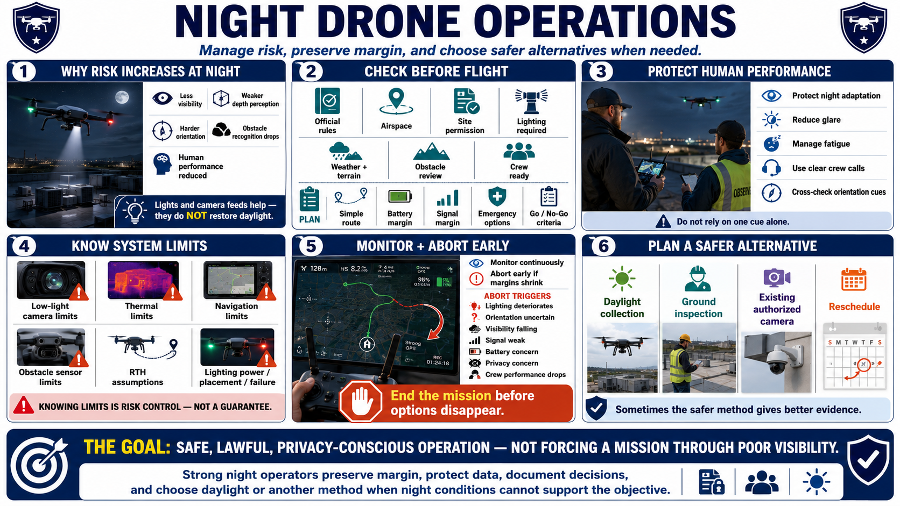

Course Summary and Key Takeaways
Connecting to LMS... Progress: in progress

Narration
Night operations increase risk because visibility, depth perception, orientation, obstacle recognition, and human performance are reduced. Aircraft lighting and camera feeds help, but neither restores daylight conditions or removes uncertainty.
Check current official rules, airspace, site permissions, lighting requirements, weather, terrain, obstacles, and crew readiness. Define simple routes, conservative battery and signal margins, emergency options, and clear go or no-go criteria.
Protect night adaptation, manage glare and fatigue, use clear crew calls, and cross-check multiple orientation cues. Treat anti-collision and orientation lighting as controls with power, placement, visibility, and failure considerations.
Understand low-light camera, thermal, navigation, obstacle-sensor, and return-to-home limits. During flight, monitor conditions continuously and abort early when lighting, orientation, visibility, signal, battery, privacy, or crew performance deteriorates.
Plan an alternative before launch. Daylight collection, a ground inspection, an existing authorized camera, or rescheduling may answer the mission with less risk and better evidence.
The goal is safe, lawful, privacy-conscious operation, not forcing a mission through poor visibility. Strong night operators preserve margin, protect data, document decisions, and choose daylight or another method when night conditions cannot support the objective.